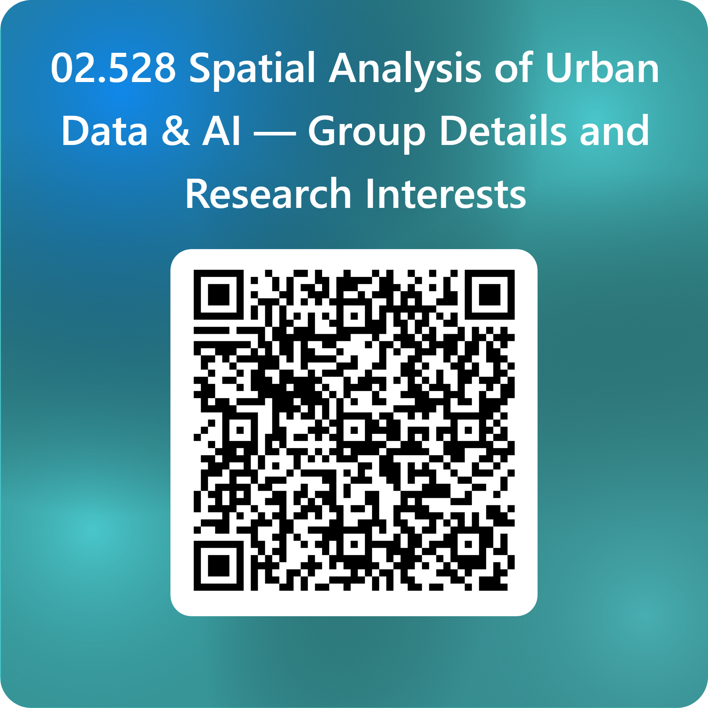

class: center <br> # Spatial Analysis of Urban Data ## Final Project: Spatial Analysis of Urban Issues in Singapore (70%) ## Weeks 09-14 [Bayi Li](mailto:barryli081@gmail.com) <button onclick="window.location.href='index.html'">Go Back to Menu</button> .toc-wrapper[ <div class="toc"> <a href="#group" class="toc-item">Form Your Group</a> <a href="#topic" class="toc-item">Choose Your Topic</a> <a href="#overview" class="toc-item">Project Overview</a> <a href="#brief" class="toc-item">Project Brief</a> <a href="#questions" class="toc-item">Research Questions</a> <a href="#timeline" class="toc-item">Project Timeline</a> <a href="#deliverables" class="toc-item">Deliverables</a> </div> ] --- name: group ## Task 1: Form Your Group In the [Week 8 class](raster.html), form a group of **3–4 people** and choose a **group alias**: a short name for your group. --- name: topic ## Task 2: Choose Your Topic Each group works on **one primary domain** as the main topic of its final project. .project-table[ | Primary domain | Subfields and research topics | |---|---| | 1. Urban Planning & Spatial Structure | Land use, urban morphology, density, zoning, spatial development, urban growth, urban regeneration | | 2. Transportation & Human Mobility | Traffic, public transport, travel behaviour, mode choice, accessibility, walking, cycling, micromobility | | 3. Urban Environment & Ecology | Urban greenspace, parks, tree canopy, biodiversity, air and noise pollution, ecosystem services | | 4. Urban Climate & Resilience | Urban heat islands, flooding, climate adaptation, disaster risk, carbon emissions, environmental resilience | | 5. Built Environment & Public Space | Streetscape, urban design, public-space activities, walkability, neighbourhood quality, place vitality | | 6. Housing & Urban Economy | Housing affordability, property markets, employment, retail, commercial activity, tourism, economic geography | | 7. Urban Society, Equity & Health | Spatial inequality, segregation, social inclusion, environmental justice, public health, well-being | | 8. Urban Infrastructure & Services | Utilities, energy, water, waste, telecommunications, public facilities, infrastructure performance | | 9. Urban Governance & Policy | Planning policy, urban management, public participation, policy evaluation, service delivery, smart governance | ] --- .right_half[ <p></p> *QR code placeholder: to be shared in class* ] ## Task 2: Rank Three Options In the form, rank three different domains from the list: - **First option** - **Second option** - **Third option** The lecturer decides each group's topic **by submission time**: earlier submissions are considered first, so a group that submits later may not get its first option. Agree on your three options as a group **before** you scan the QR code. Submit through the form, shared by **QR code in class**: - your **group alias** - the names of your **group members** The same form is used for [Task 2](#topic). Each group submits **once**: only **one member** of the group needs to submit the form. --- ## Final Project **Spatial Analysis for a real-world urban issue in Singapore** (70%, Weeks 9–14) Within its assigned [topic](#topic), each group defines a focused Singapore-based urban question, justifies why it matters, and develops a spatial argument using open government datasets, appropriate methods, and critical interpretation. Delivered as three outputs: a presentation slide deck, a 6–8 page report, and reproducible, open-source project code. --- ## Final Project Timeline | Week | Milestone | |---|---| | Week 8 | Form groups and submit topic options in class | | Week 9 | Understand the project, find literature, list candidate datasets | | Week 10 | Review studies, plan the project, begin the analytical workflow | | Week 11 | Collect and integrate the datasets for the workflow | | Week 12 | Conduct spatial analysis, produce and visualise results | | Week 13 | Prepare the presentation and report in tutorials | | Week 14 | 15-min presentation + 5-min Q&A | --- name: overview ## Project Overview Learn to study urban issues through geospatial and non-geospatial data, including the use of AI-assisted workflows for spatial interpretation, scenario exploration, and policy insight generation. This final project runs from **Week 9 to Week 14** and contributes **70%** of the course grade: - **20%** Presentation - **20%** Quality of project code - **30%** Individual project report --- ## Project Goals This project asks each group to: 1. define a clear urban research question relevant to Singapore 2. integrate spatial and non-spatial datasets relevant to that question 3. apply GIS and analytical methods from the course 4. interpret the results critically in relation to planning and policy 5. communicate findings through a presentation and a short report --- name: brief ## Project Brief This project focuses on urban issues in Singapore that can be explored through spatial analysis. Within their assigned topic, students may study themes such as transport accessibility, walkability, housing patterns, land-use change, green-space provision, environmental exposure, public amenity distribution, commercial activity, or other urban challenges that can be supported by available data. In this project, students need to identify a clear Singapore-based urban question, justify why it matters, and develop a spatial argument using appropriate datasets, methods, and interpretation. --- ## Why This Topic Matters The project connects urban analytics with a real policy challenge. Key themes include: - transport accessibility and daily mobility - housing, land use, and neighbourhood change - distribution of public amenities and services - environmental quality, green space, and liveability - the role of data and AI-assisted interpretation in policy discussion --- ## Reference Context Students should build their project from a combination of: - academic literature - policy and planning reports - official Singapore data portals - spatial datasets collected or prepared during the course The final project should be grounded in evidence rather than relying on a single source. --- name: questions ## Example Research Questions You may work with one of these questions, adapt them, or propose your own, as long as it fits your group's assigned topic. - How does public transport accessibility vary across neighbourhoods in Singapore? - How walkable are different parts of Singapore, and how can this be evaluated spatially? - How evenly are public amenities such as parks, hawker centres, libraries, or sports facilities distributed? - What spatial patterns can be observed in housing type, land use, or redevelopment activity? - How do environmental factors such as greenery, heat, or road density vary across the city? --- ## Suggested Analytical Angles Your project may combine several approaches: - demographic mapping and comparison - service-area and accessibility analysis - network-based walkability assessment - integration of planning boundaries with population or land-use data - scenario comparison for future urban planning decisions - AI-assisted synthesis of maps, patterns, and policy implications --- ## Data and Method Expectations A strong project should make careful choices about: 1. research question and scope 2. datasets and data quality 3. spatial units and study area 4. methods used for analysis 5. interpretation limits and planning implications The goal is not only to produce maps, but to build a defensible analytical argument. --- name: timeline ## Project Timeline .project-table[ | Week | Main Task | |---|---| | Week 8 | Form your group and submit your topic options through the form, in the [raster class](raster.html). | | Week 9 | Understand the project, find relevant literature, and list potential datasets needed to answer the research question. | | Week 10 | Review documents and existing studies, plan the full project with your group, and begin building the analytical workflow that best fits your chosen urban issue. | | Week 11 | Find the datasets needed for the project and begin integrating them for the research workflow. | | Week 12 | Conduct spatial analysis, produce results, and visualise the findings. | | Week 13 | Project and report consultation by group, guidance on using AI tools critically in the project, preparation of the final presentation format, and potential inter-group sharing of initial findings. | | Week 14 | Present the final proposal in a 15-minute presentation followed by 5 minutes of Q and A. | ] --- ## Recommended Weekly Outputs - **Week 9**: a focused research question, short literature list, and dataset plan - **Week 10**: a project workflow sketch and early analysis setup - **Week 11**: cleaned and integrated datasets ready for analysis - **Week 12**: maps, tables, and core analytical findings - **Week 13**: draft slides, report outline, AI-use reflection, and feedback from consultation or inter-group sharing - **Week 14**: final presentation and completed report submission --- name: deliverables ## Deliverables The project will be delivered in three main forms: 1. a deck of slides for the final presentation 2. a **6-8 page report** 3. reproducible project code used for the analysis In addition, students must clearly explain each team member's contribution to the group project. --- ## Presentation Format The final presentation should be organised as a clear narrative rather than a collection of disconnected maps. A recommended slide structure is: 1. project title and group members 2. research question and motivation 3. background and literature context 4. datasets and study area 5. methods and workflow 6. main maps, tables, and findings 7. interpretation, limitations, and policy implications 8. conclusion and next steps 9. declaration of team member contributions The Week 14 presentation format is **15 minutes presentation + 5 minutes Q and A**. --- ## Guidance on Using AI in the Project AI tools may be used to support the project, but they should assist analysis rather than replace reasoning. .left_half[ Students may use AI tools to: - generate or refine code - read and explain unfamiliar code - debug scripts or workflows - summarise literature or policy documents as a starting point - help compare alternative analytical approaches ] .right_half[ Students should also reflect critically on AI use by explaining: 1. what tool was used 2. what task it supported 3. what was checked manually 4. what errors, uncertainty, or limitations remained ] <div class="clear"></div> If AI is used in a meaningful way, it should be discussed briefly in the methodology, workflow, or reflection section of the report and presentation. --- ## Report Structure Guide The report should include the following components: 1. **Motivation and Objectives**: explain the research question and project objectives 2. **Background**: review related work, policy context, and relevant studies 3. **Methodology and Approach**: explain the methods used and how the analysis was conducted 4. **Conclusion**: summarise results, implications, and future perspective 5. **Declaration of Teamwork**: include **Appendix 4** --- ## Assessment Expectations A strong final project should demonstrate: - a clear and relevant urban research question - appropriate use of spatial and non-spatial data - logical methodology and transparent workflow - reproducible code that supports the analysis - meaningful interpretation rather than description alone - clear maps, figures, and presentation structure - evidence of balanced teamwork and contribution --- ## Practical Advice - Keep the project question focused enough to complete within the semester. - Prioritise data quality and a clean, reproducible workflow. - Use network analysis only when it helps answer the question clearly. - Connect maps and statistics back to planning implications. - Use AI-assisted coding tools to generate code, read code, and debug when they help you work more efficiently. - Use AI-assisted workflows critically: explain what was automated, what was interpreted manually, and what limitations remain. --- ## Final Reminder This project is not just about producing attractive maps. It is about using spatial analysis to make a well-reasoned argument about an important urban issue in Singapore. <div class="project-note">A clear question, a disciplined workflow, and a careful interpretation are usually more valuable than an overly broad project.</div> --- <xL>Back to course menu: </xL><button onclick="window.location.href='index.html'">Go Back to Menu</button>